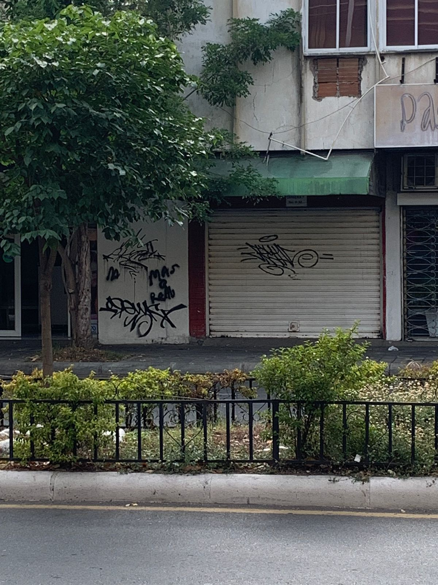
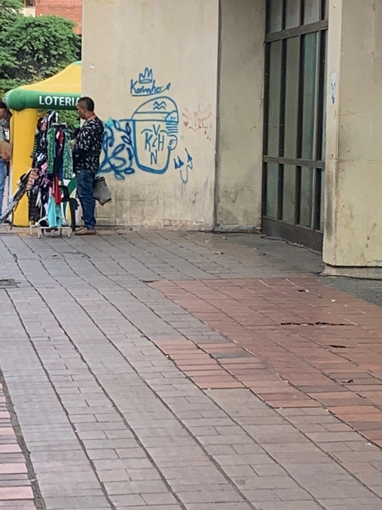

es una apropiación del espacio urbano mediante una iniciativa artística de cualquier tipo..
EjemplosSabiendo que actualmente, el arte callejero se usa para controlar ciertos puntos de una ciudad, dando a entender que ahi se maneja un grupo delicuencial, deja en claro que se ha desmoronado lo que es el arte callejero. Tambien, se le ha dado un uso en torno de alzar la voz.
Mas informacion.
Estos grafitis representan el arte callejero que se encuentran en la sociedad hoy en dia..
Mas informacion